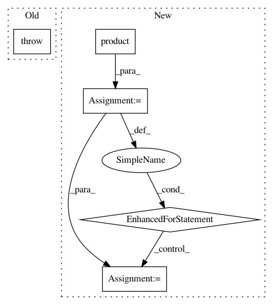

8e46c0dfb78769a3f97db273e3c608059b74bdfa,pgmpy/factors/JointProbabilityDistribution.py,JointProbabilityDistribution,check_independence,#JointProbabilityDistribution#Any#Any#Any#,135
Before Change
JPD = self.copy()
if event3:
if isinstance(event3, six.string_types):
raise TypeError("Event 3 A list of tuples of the form (variable_name, variable_state")
JPD.conditional_distribution(event3)
if isinstance(event1, six.string_types):
raise TypeError("Event 1 should be a list or array-like structure")
if isinstance(event2, six.string_types):
After Change
// Using the alternate definition for conditional independence
// X and Y are conditional independent if phi(X, Z) * phi(Y, Z) is propotional
// to phi(X, Y, Z)
for variable_pair in itertools.product(event1, event2):
JPD_ev1_ev3 = JPD.marginal_distribution((variable_pair[0], event3), inplace=False)
JPD_ev2_ev3 = JPD.marginal_distribution((variable_pair[1], event3), inplace=False)
JPD_prod = JPD_ev1_ev3 * JPD_ev2_ev3
phi1 = Factor(JPD_prod.variables, JPD_prod.cardinality, JPD.values)
phi2 = Factor(JPD.variables, JPD.cardinality, JPD.values)
phi = phi1 / phi2
if(np.unique(phi.values).size != 1):
return False
return True
else:
JPD.conditional_distribution(event3)
for variable_pair in itertools.product(event1, event2):
In pattern: SUPERPATTERN
Frequency: 3
Non-data size: 5
Instances
Project Name: pgmpy/pgmpy
Commit Name: 8e46c0dfb78769a3f97db273e3c608059b74bdfa
Time: 2016-01-05
Author: utkarsh.gupta550@gmail.com
File Name: pgmpy/factors/JointProbabilityDistribution.py
Class Name: JointProbabilityDistribution
Method Name: check_independence
Project Name: scipy/scipy
Commit Name: 1abdaa98b8cfe9164ab462754aeb73d172ee561b
Time: 2018-03-04
Author: ilhanpolat@gmail.com
File Name: scipy/linalg/tests/test_basic.py
Class Name: TestLstsq
Method Name: test_check_finite
Project Name: scikit-image/scikit-image
Commit Name: a346268a461ef2a403ed8e8da6e9e446c741e75b
Time: 2017-10-25
Author: jni.soma@gmail.com
File Name: skimage/measure/_moments.py
Class Name:
Method Name: moments_normalized